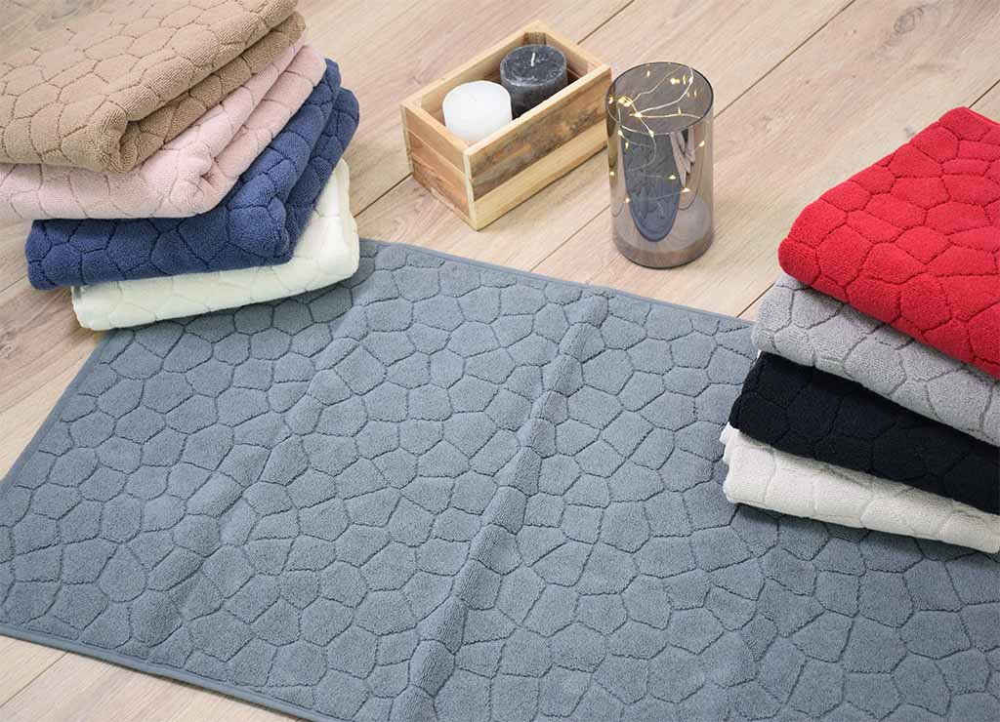
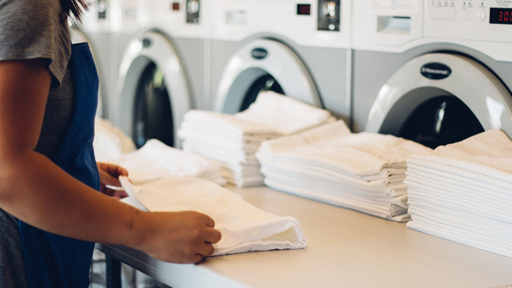

News Letters
SRS-Eco Pressing: Tout votre linge lavé avec une température allant jusqu'à 90 degré, Séché, repassé, plié et embalé!
Profitez d'un service de netoyage de première classe avec
SRS-Eco pressing
La première laverie entièrement automatique au Bénin! Ici à
Parakou! Profitez d'une fraîcheur en profondeur. Hygéniquement
pure. Au Benéfice de votre famille.
engagement
Nos engagements vis à vis des clients
services
Découvrez nos services
-
Linge au kilo

Grâce au système de linge au kilo, nous facturerons vos affaires au poids (1 kg minimum, arrondi au kg supérieur). Autrement dit, vous ne payez que ce que vous lavez et connaissez le montant de votre facture au moment de solliciter nos services.
-
Petits tapis de lit, Rideaux, moustiquaire,
Sous-vêtements, ChaussureNous inspecterons soignesement votre linge comme demandé. Faites un diagnostic et préconisez le cycle de lavage adapté à votre linge ainsi qu'à l'élimination des tâches. Vous pouvez emballer discrêtement vos sous-vêtements dans un petit sacs en lin, même haut température, par exemple 60 degrés, coton 90 degrés (vous pouvez nous emprunter des sacs en lin et les remplire vous même).
-
Netoyage, Lavage et Reppassage

Le travail de nos équipes d’experts au pressing est d’analyser le vêtement et sa composition afin d’effectuer le nettoyage le plus adapté. Le lavage du linge fait appel à une gamme de produits lessiviels qui purifient, dégraissent, adoucissent et selon le besoin, blanchir les textiles.
-
Blanchisserie
Votre linge souffre de tâches? Une polution supérieur à la moyenne? Parmis les acariens ou la brume grise? Nous proposons des programmes de lavage spéciaux et différenciés avec différentes températures et intervalles de temps. Ainsi que les programmes de prélavage.
Ici vous pouvez tremper délicatement votre linge, le pré-rincé, puis le passer au cycle de lavage Principal. A partir de 60deg et 1.5H de lavage, non seulement tous les acariens sont mort, mais les résidus sont également éliminés. Le sèche linge et le repassage font le reste. Très soulageant pour les personnes allergiques. Les désinfectants ne fonctionnent pas contre les acariens!
News Letters
Ne rattez plus nos Publications
Vous êtes prête à découvrire nos Offres ?
Nous proposons des solutions et des offres imbatables pour facilité votre quotidien!
témoignages
Ce que pensent nos clients ⇂
“ SRS Eco-Pressing est synonyme d'excellence en matière de lavage et repassage. Leurs agents sont hautement dynamiques et leur travail est tout simplement impeccable. Je ne peux pas recommander assez SRS Eco-Pressing à tous ceux qui ont besoin d'un service de pressing fiable et de qualité supérieure. „
Nom du Client
“J'ai été vraiment impressionné par les services de SRS Eco-Pressing. Leur lavage du linge au kilo est incroyablement pratique et efficace. Les agents étaient très dynamiques et professionnels, et le résultat était impeccable. Mon linge est ressorti propre, frais et parfaitement plié. „
Nom du Client
“ Je suis extrêmement satisfait des services de SRS Eco-Pressing. Leur combinaison de lavage et repassage est tout simplement remarquable. Mon linge est toujours impeccablement propre et parfaitement repassé. Je suis ravi de confier mes vêtements à SRS Eco-Pressing „
Nom du Client